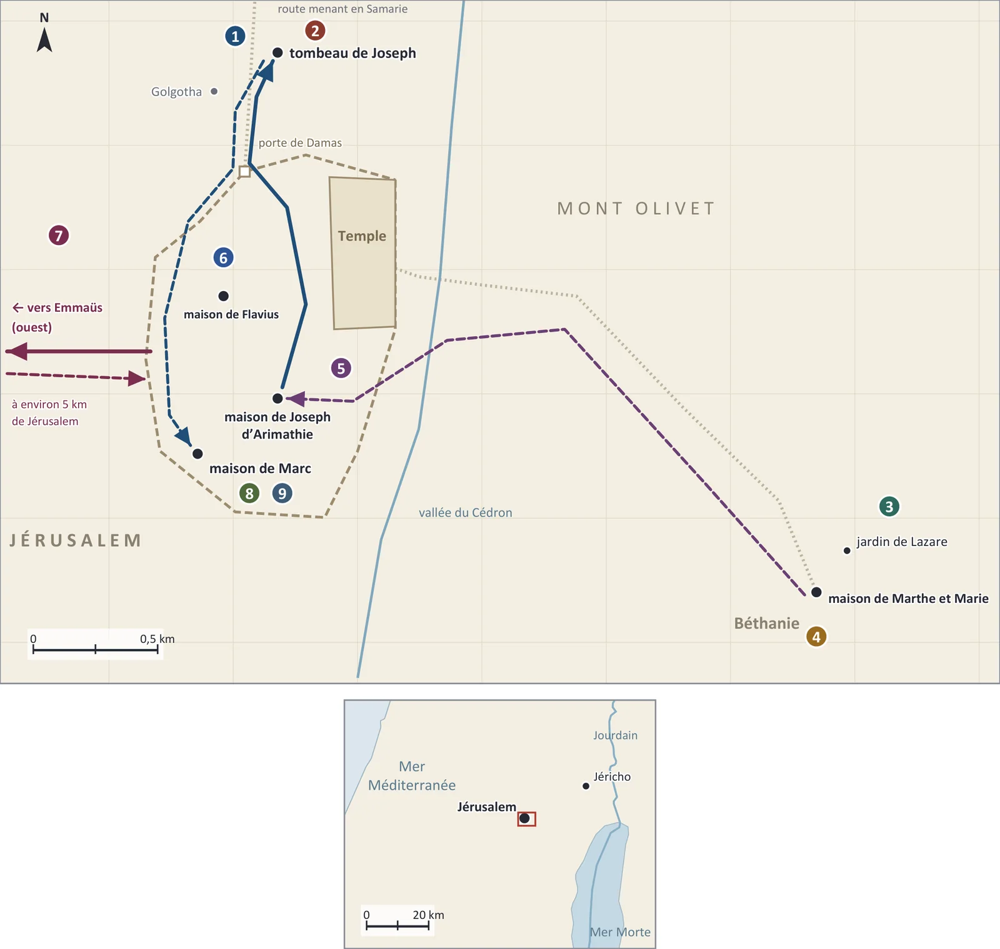
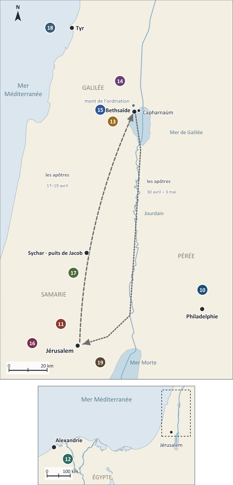

Partie VII La résurrection, les apparitions et la suite
Fascicules 189–196
Fascicule 189La résurrectionavril de l’an 30
| Évènement | Livre d’Urantia | Bible |
|---|---|---|
| (Introduction) | 189:0.1–3 | Aucun |
| Après l’ensevelissement de Jésus, le chef des archanges réunit son conseil de la résurrection mais, vers minuit, ils conclurent que des créatures ne pouvaient aider leur Créateur à revenir à la vie. L’Ajusteur Personnalisé de Jésus déclara aux armées célestes que Micaël avait le pouvoir de donner sa vie et de la reprendre. | ||
| 1. Le transit morontiel | 189:1.1–13 | Aucun |
| À trois heures deux minutes, le dimanche matin 9 avril de l’an 30, la forme et la personnalité morontielles ressuscitées de Jésus sortirent du tombeau de Joseph. Son corps physique y demeurait dans ses bandelettes de lin, et les pierres de la porte et les sceaux de Pilate restèrent intacts. Il apparut comme une personnalité morontielle, semblable aux ascendeurs ressuscités des mondes des maisons. | ||
| 2. Le corps matériel de Jésus | 189:2.1–9 | Mt 28:2-4, 11-15 |
| Le chef des archanges demanda à Gabriel le corps mortel de Jésus et en reçut la permission, et les armées célestes le dissolvèrent presque instantanément. Les médians secondaires écartèrent les pierres de l’entrée du tombeau, et les gardes effrayés s’enfuirent. Les dirigeants juifs soudoyèrent les vingt gardes pour qu’ils disent que les disciples avaient volé le corps.Diffère de la BibleMatthieu dit qu’un ange du Seigneur descendit au milieu d’un tremblement de terre et roula la pierre, tandis que le Livre d’Urantia attribue cela aux médians secondaires ; il explique que le tombeau était vide parce que le corps avait été dissous, et non ressuscité. | ||
| 3. La résurrection dispensationnelle | 189:3.1–5 | Aucun |
| Un peu après quatre heures et demie, le dimanche matin, le Micaël morontiel ordonna à Gabriel de commencer l’appel nominal de la résurrection planétaire. Les survivants endormis d’Urantia depuis l’époque d’Adam apparurent alors dans les salles de résurrection de maisonnia : ce fut la troisième résurrection dispensationnelle. | ||
| Carte 37Le jour de la résurrection : apparitions à Jérusalem et à BéthanieDimanche 9 avril de l’an 30 | ||
| 4. La découverte du tombeau videCarte 37-① Le tombeau · aux cinq femmes | 189:4.1–14 | Mt 28:1-10; Mc 16:1-11; Lc 24:1-11; Jn 20:1-2, 11-18 |
| Vers trois heures et demie, le dimanche matin, Marie-Madeleine et quatre autres femmes vinrent au tombeau avec des onguents et n’y trouvèrent que les linceuls. Quand un inconnu qu’elles prenaient pour le jardinier appela « Marie », elles reconnurent le Maitre. Jésus leur dit d’annoncer aux apôtres, et à Pierre, qu’il était ressuscité.Diffère de la BibleDans les Évangiles, des anges ou un jeune homme vêtu de blanc annoncent la résurrection au tombeau, tandis que le Livre d’Urantia ne contient aucune annonce angélique ; Jésus lui-même apparut aux femmes, dont les noms et le nombre varient selon les Évangiles, mais que le livre fixe à cinq. | ||
| 5. Pierre et Jean au tombeauCarte 37-② Le tombeau · à Marie-Madeleine | 189:5.1–5 | Lc 24:12; Jn 20:3-10 |
| Pierre et Jean coururent au tombeau et le trouvèrent vide, les linceuls posés en ordre. Pierre pensa que le corps avait été volé, mais Jean se demanda pourquoi les linges avaient été laissés intacts. Après leur départ, Jésus apparut de nouveau à Marie-Madeleine et la chargea de dire aux apôtres qu’il les précèderait en Galilée.Diffère de la BibleL’Évangile de Jean dit que l’autre disciple vit et crut, tandis que le Livre d’Urantia dit qu’aucun des deux apôtres ne comprit clairement ce qui s’était passé, et que Jésus apparut ensuite une seconde fois à Marie. | ||
Carte 37Le jour de la résurrection : apparitions à Jérusalem et à Béthanie
Dimanche 9 avril de l’an 30 · Fascicules 189–191

- ①Le tombeau · aux cinq femmesVers trois heures et demie, les cinq femmes venues de la maison de Joseph franchirent la porte de Damas et arrivèrent devant le tombeau vide ; Jésus, que Marie-Madeleine prit pour le jardinier, leur parla. Elles retournèrent en hâte à la maison des Marc (en tirets). [189:4.2–13]
- ②Le tombeau · à Marie-MadeleineAprès que Pierre et Jean eurent vu le tombeau et furent repartis, il apparut de nouveau à Marie-Madeleine, qui s’y attardait. [189:5.1–5]
- ③Béthanie · le jardin de LazarePeu après midi, à Jacques, le frère ainé de Jésus, qui se tenait dans le jardin de Lazare devant le tombeau vide. Marie-Madeleine y était venue aussi. [190:2.2–3]
- ④Béthanie · la maison de Marthe et MariePeu avant deux heures, à sa famille terrestre et à leurs amis, vingt personnes en tout ; il apparut dans l’embrasure de la porte de derrière ouverte. [190:2.6]
- ⑤La maison de Joseph d’ArimathieVers quatre heures et quart, à environ vingt-cinq femmes croyantes. Marie-Madeleine était revenue de Béthanie quelques minutes auparavant (en tirets). [190:2.7; 190:3.1]
- ⑥La maison de FlaviusVers quatre heures et demie, à une quarantaine de croyants grecs, bien que les portes fussent solidement fermées. [190:4.1]
- ⑦Sur le chemin d’EmmaüsQuelques minutes avant cinq heures, à environ cinq kilomètres de Jérusalem, aux frères Cléopas et Jacob. Emmaüs est à une douzaine de kilomètres à l’ouest de Jérusalem. Ils retournèrent en hâte à Jérusalem (en tirets). [190:5.1–7]
- ⑧Le jardin de la maison des Marc · à PierreVers huit heures et demie du soir, à Simon Pierre, dans le jardin de la maison des Marc. [191:1.1–2]
- ⑨La salle du haut · aux dix apôtresPeu après neuf heures, au milieu des dix apôtres réunis dans la salle du haut, toutes portes verrouillées. Thomas n’était pas là. [191:0.1; 191:2.1–2]
Fascicule 190Les apparitions morontielles de Jésusavril de l’an 30
| Évènement | Livre d’Urantia | Bible |
|---|---|---|
| (Introduction) | 190:0.1–5 | Aucun |
| Jésus ressuscité resta brièvement sur Urantia pour faire l’expérience de la carrière morontielle que les mortels de Satania parcourent sur les mondes des maisons. Son corps morontiel n’avait pas de sang circulant et ne prenait pas de nourriture matérielle, et pourtant il était réel ; les croyants qui le virent ne furent donc pas abusés par des hallucinations. | ||
| 1. Les annonciateurs de la résurrection | 190:1.1–10 | Aucun |
| En apprenant le récit des femmes, Joseph et David Zébédée inspectèrent le tombeau, mais à sept heures et demie le capitaine des gardes du temple fit enlever les linceuls. Comme les apôtres doutaient, David remit la bourse à Matthieu et partit ; peu avant dix heures, il envoya ses vingt-six messagers porter la nouvelle de la résurrection et licencia le corps des messagers. | ||
| 2. L’apparition de Jésus à BéthanieCarte 37-③ Béthanie · le jardin de LazareCarte 37-④ Béthanie · la maison de Marthe et MarieCarte 37-⑤ La maison de Joseph d’Arimathie | 190:2.1–7 | Aucun |
| Vers midi, le dimanche, dans le jardin de Lazare à Béthanie, Jésus fit sa troisième apparition, à son frère ainé Jacques, l’appelant au service du royaume. Peu avant deux heures, il apparut chez Marthe et Marie à sa famille terrestre et à ses amis, vingt personnes en tout, les invitant à entrer dans la communion de l’Esprit de Vérité, puis disparut. | ||
| 3. Au foyer de Joseph | 190:3.1–3 | Aucun |
| Vers quatre heures et quart, le dimanche après-midi, Jésus fit sa cinquième apparition, à environ vingt-cinq femmes croyantes dans la maison de Joseph d’Arimathie. Il leur dit que, dans le royaume, il n’y a ni Juif ni Gentil, ni homme ni femme, et les envoya publier la bonne nouvelle. Comme la nouvelle se répandait, le sanhédrin décida d’expulser des synagogues quiconque parlerait de la résurrection. | ||
| 4. L’apparition aux GrecsCarte 37-⑥ La maison de Flavius | 190:4.1–2 | Aucun |
| Vers quatre heures et demie, bien que les portes fussent solidement fermées, Jésus fit sa sixième apparition, à une quarantaine de croyants grecs dans la maison de Flavius. Il leur dit que, dans le royaume du Père, il n’y aurait ni Juif ni Gentil, et les chargea de proclamer l’évangile du salut au monde entier. Les Grecs restèrent ensemble toute la nuit. | ||
| 5. La promenade avec deux frèresCarte 37-⑦ Sur le chemin d’Emmaüs | 190:5.1–8 | Mc 16:12-13; Lc 24:13-35 |
| Quelques minutes avant cinq heures, le dimanche après-midi, Jésus fit sa septième apparition, aux frères Cléopas et Jacob, des bergers, sur le chemin d’Emmaüs, et leur expliqua les Écritures. Quand il rompit le pain dans leur maison, ils le reconnurent, et il disparut. Les deux frères retournèrent en hâte à Jérusalem et le racontèrent aux apôtres dans la salle du haut.Diffère de la BibleLuc nomme Cléopas et un disciple anonyme, tandis que le Livre d’Urantia les identifie comme Cléopas et son frère incroyant Jacob, des bergers d’Emmaüs ; il ne contient pas l’indication de Luc selon laquelle le Seigneur était apparu à Simon. | ||
Fascicule 191Apparitions aux apôtres et à d’autres disciples influentsavril de l’an 30
| Évènement | Livre d’Urantia | Bible |
|---|---|---|
| (Introduction)Carte 37-⑨ La salle du haut · aux dix apôtres | 191:0.1–13 | Aucun |
| Le dimanche de la résurrection, dix apôtres restèrent dans la salle du haut, portes barricadées par crainte d’être arrêtés, tandis que Thomas ruminait seul près de Bethphagé. Jean soutenait fermement que Jésus était ressuscité, et Pierre oscillait entre la foi et le doute. Le Maitre retarda sa première apparition afin qu’ils puissent réfléchir à ses paroles et que Thomas puisse être avec eux. | ||
| 1. L’apparition à PierreCarte 37-⑧ Le jardin de la maison des Marc · à Pierre | 191:1.1–5 | Aucun |
| Vers huit heures et demie, le dimanche soir, Jésus fit sa huitième apparition, à Pierre, dans le jardin de la maison des Marc ; il lui dit qu’il avait été pardonné avant même de le demander et l’invita à se préparer à prêcher l’évangile. Quand Pierre déclara qu’il avait vu le Maitre, André insinua que Pierre avait déjà vu auparavant des choses qui n’étaient pas réelles. | ||
| 2. Première apparition aux apôtres | 191:2.1–2 | Mc 16:14; Lc 24:36-40; Jn 20:19-23 |
| Peu après neuf heures, le dimanche soir, Jésus apparut sous forme morontielle au milieu des dix apôtres dans la salle du haut, bien que les portes fussent verrouillées. Il leur reprocha leurs doutes, leur rappelant qu’il avait prédit sa mort et sa résurrection le troisième jour, et leur dit d’aller en Galilée quand ils seraient tous réunis. Ce fut sa neuvième apparition.Diffère de la BibleLuc et Jean disent que Jésus montra ses mains, ses pieds et son côté et souffla sur eux pour qu’ils reçoivent le Saint-Esprit, tandis que le Livre d’Urantia ne contient pas cette scène et leur dit plutôt d’aller en Galilée quand Thomas serait revenu. | ||
| 3. Avec les créatures morontielles | 191:3.1–4 | Aucun |
| Le lundi, Jésus resta avec plus d’un million de directeurs morontiels et de mortels en transition venus des sept mondes des maisons. Vers minuit, sa forme fut ajustée au deuxième stade morontiel, et il progressa de stade en stade, atteignant la citoyenneté de Jérusem le 7 mai. C’est ainsi que Micaël acheva sa septième expérience d’effusion dans l’univers. | ||
| Carte 38Les apparitions morontielles, de la dixième à la dix-neuvième11 avril – 18 mai de l’an 30 | ||
| 4. La dixième apparition (à Philadelphie)Carte 38-⑩ Philadelphie | 191:4.1–7 | Aucun |
| Un peu après huit heures, le mardi 11 avril, Jésus fit sa dixième apparition, à Abner, à Lazare et à environ cent-cinquante croyants dans la synagogue de Philadelphie. Il leur dit d’aimer et de servir tous les hommes comme il les avait aimés, et de fraterniser avec tous les ouvriers de l’évangile. Le lendemain matin, ils partirent proclamer la résurrection. | ||
| 5. Deuxième apparition aux apôtresCarte 38-⑪ Jérusalem · la maison des Marc | 191:5.1–7 | Jn 20:24-29 |
| Thomas revint le samedi 15 avril, mais refusa de croire. Le lendemain soir, comme il disait qu’il lui fallait mettre son doigt dans la marque des clous, Jésus apparut et dit : « De même que le Père m’a envoyé dans le monde, je vous y envoie. » Thomas tomba à genoux en s’écriant : « Je crois ! », et, avant l’aube, les apôtres partirent pour la Galilée.Diffère de la BibleDans l’Évangile de Jean, Jésus invite Thomas à toucher la marque des clous et son côté, tandis que le Livre d’Urantia dit que Jésus était ressuscité sous forme morontielle et ne portait pas la marque des clous sur les mains. | ||
| 6. L’apparition à AlexandrieCarte 38-⑫ Alexandrie (vue d’ensemble) | 191:6.1–4 | Aucun |
| Vers huit heures et demie, le mardi soir 18 avril, Jésus fit sa douzième apparition, à Rodan et à quelque quatre-vingts croyants à Alexandrie, au moment même où Nathan, le messager de David, achevait son récit de la crucifixion. Jésus leur dit que l’évangile appartient à tous les hommes et que l’Esprit de Vérité viendrait bientôt. | ||
Carte 38Les apparitions morontielles, de la dixième à la dix-neuvième
11 avril – 18 mai de l’an 30 · Fascicules 191–193

- ⑩PhiladelphieUn peu après huit heures, le mardi 11 avril, à Abner, à Lazare et à quelque cent-cinquante de leurs associés dans la synagogue. [191:4.1]
- ⑪Jérusalem · la maison des MarcLe dimanche soir 16 avril, aux onze apôtres, Thomas étant désormais avec eux. De très bonne heure le lendemain matin, les apôtres partirent pour la Galilée. [191:5.1–7]
- ⑫Alexandrie (vue d’ensemble)Le mardi soir 18 avril, vers huit heures et demie, à Rodan et à quelque quatre-vingts autres croyants. [191:6.1]
- ⑬Le rivage à BethsaïdeVers six heures, le vendredi 21 avril, aux dix apôtres, alors que leur barque approchait du rivage après une nuit de pêche. La première apparition en Galilée. [192:1.1–2]
- ⑭La colline près de CapharnaümÀ midi, le samedi 22 avril, aux onze apôtres, sur la montagne même où il les avait consacrés comme apôtres. [192:3.1]
- ⑮BethsaïdeLe samedi 29 avril, à trois heures, à plus de cinq-cents croyants rassemblés pour entendre prêcher Pierre. [192:4.2–3]
- ⑯Jérusalem · la cour de NicodèmeLe vendredi 5 mai, vers neuf heures du soir, aux onze apôtres, au corps évangélique féminin et à une cinquantaine d’autres disciples dirigeants. [193:0.1]
- ⑰Près du puits de Jacob, à SycharVers quatre heures, l’après-midi du sabbat 13 mai, à Nalda et à environ soixante-quinze croyants samaritains. [193:1.1–3]
- ⑱TyrLe mardi 16 mai, un peu avant neuf heures du soir, à des croyants sur le point de se séparer. [193:2.1]
- ⑲Jérusalem · dernière apparition et adieuDe bonne heure le jeudi matin 18 mai, aux onze apôtres, dans la salle du haut de la maison de Marie Marc ; vers sept heures et demie, sur le versant ouest du mont Olivet, il prit congé et disparut à leurs yeux. [193:3.1; 193:5.1–3]
Fascicule 192Apparitions en Galiléeavril de l’an 30
| Évènement | Livre d’Urantia | Bible |
|---|---|---|
| (Introduction) | 192:0.1–5 | Aucun |
| Les apôtres se tenant cachés, les dirigeants juifs se calmèrent, croyant le mouvement étouffé. À partir de ce moment, Pierre fut, d’un commun accord, le chef du corps apostolique, et Matthias, choisi plus tard à la place de Judas, devint trésorier. De bonne heure le lundi, les apôtres partirent pour la Galilée avec Jean Marc et atteignirent Bethsaïde tard dans la nuit du mercredi. | ||
| 1. Apparition près du lacCarte 38-⑬ Le rivage à Bethsaïde | 192:1.1–11 | Jn 21:1-14 |
| Le vendredi matin 21 avril, après une nuit de pêche infructueuse, un homme sur la plage dit à dix apôtres de jeter le filet du côté droit, et le filet se remplit. Quand Jean reconnut le Maitre, Pierre sauta dans l’eau. Ils comptèrent cent-cinquante-trois gros poissons, et Jésus prit le petit déjeuner avec eux et s’entretint avec eux pendant plus d’une heure.Diffère de la BibleL’Évangile de Jean présente cela comme un miracle, tandis que le Livre d’Urantia n’y voit que la prescience qu’avait le Maitre de l’endroit où se trouvaient les poissons ; c’est Jean Marc qui prépara les poissons, et Simon Zélotès était absent, étant rentré chez lui. | ||
| 2. Entretiens avec les apôtres deux par deux | 192:2.1–14 | Jn 21:15-24 |
| Après le petit déjeuner, Jésus marcha sur la plage avec les apôtres, deux par deux. Il dit à Jean d’aimer les hommes et demanda trois fois à Pierre s’il l’aimait, lui recommandant de nourrir ses brebis. Avec les autres paires, il parla de confiance, de service, d’obéissance et de foi, puis dit qu’il les retrouverait le lendemain sur la montagne de leur ordination.Diffère de la BibleL’Évangile de Jean ne rapporte que l’échange avec Pierre et une prédiction de sa mort, tandis que le Livre d’Urantia dit que Jésus s’entretint avec tous les apôtres deux par deux, et ne contient aucune prédiction de la mort de Pierre. | ||
| 3. Sur le mont de l’ordinationCarte 38-⑭ La colline près de Capharnaüm | 192:3.1–3 | Mt 28:16-20 |
| À midi, le samedi 22 avril, Jésus fit sa quatorzième apparition, aux onze apôtres, sur la colline près de Capharnaüm où il les avait ordonnés. Agenouillés en cercle autour de lui, ils l’entendirent répéter leurs missions et renouveler l’ordination, et il pria avec des paroles de puissance. Ensuite, personne ne le vit pendant une semaine entière.Diffère de la BibleMatthieu rapporte un ordre donné sur la montagne de faire de toutes les nations des disciples, en les baptisant au nom du Père, du Fils et du Saint-Esprit, tandis que le Livre d’Urantia ne rapporte que le renouvellement de l’ordination et la prière, sans aucun ordre de ce genre. | ||
| 4. La réunion au bord du lacCarte 38-⑮ Bethsaïde | 192:4.1–8 | Aucun |
| À trois heures, le samedi 29 avril, plus de cinq-cents croyants à Bethsaïde entendirent le premier sermon public de Pierre depuis la résurrection, et, comme il terminait, Jésus fit sa quinzième apparition. De retour à Jérusalem, les apôtres réunis dans la salle du haut commencèrent à proclamer la résurrection au lieu de l’évangile du royaume. | ||
Fascicule 193Apparitions finales et ascensionmai de l’an 30
| Évènement | Livre d’Urantia | Bible |
|---|---|---|
| (Introduction)Carte 38-⑯ Jérusalem · la cour de Nicodème | 193:0.1–6 | Aucun |
| Vers neuf heures, le vendredi soir 5 mai, Jésus fit sa seizième apparition, dans la cour de Nicodème, aux onze, au corps évangélique féminin et à une cinquantaine de disciples. Il dit que sa résurrection ne changeait pas son message ; la filiation avec Dieu par la foi demeure la vérité qui sauve. Il leur dit de rester à Jérusalem. | ||
| 1. L’apparition à SycharCarte 38-⑰ Près du puits de Jacob, à Sychar | 193:1.1–3 | Aucun |
| Vers quatre heures, l’après-midi du sabbat 13 mai, Jésus fit sa dix-septième apparition, à Nalda et à environ soixante-quinze croyants samaritains, près du puits de Jacob à Sychar. Il enseigna que le salut est le don gratuit de Dieu reçu par la foi, mais qu’il doit être suivi des fruits de la vie de l’esprit, et leur dit d’aimer et de servir leurs frères avec une affection familiale. | ||
| 2. L’apparition en PhénicieCarte 38-⑱ Tyr | 193:2.1–3 | Aucun |
| Le mardi soir 16 mai, alors qu’une réunion de croyants à Tyr se terminait, Jésus fit sa dix-huitième apparition. Il enseigna que la résurrection des morts n’est pas l’évangile lui-même, et que ceux qui sont nés de l’esprit doivent en porter les fruits, tel le service aimant. La nouvelle se répandit jusqu’à Sidon et même jusqu’à Antioche. | ||
| 3. Dernière apparition à JérusalemCarte 38-⑲ Jérusalem · dernière apparition et adieu | 193:3.1–3 | Lc 24:44-49 |
| De bonne heure le jeudi matin 18 mai, Jésus apparut pour la dernière fois aux onze dans la salle du haut et leur dit de rester à Jérusalem jusqu’à ce qu’ils aient reçu l’Esprit de Vérité. Quand Simon Zélotès l’interrogea sur la restauration du royaume, il corrigea l’idée d’un royaume matériel et, citant l’exemple de Judas, les exhorta à se faire mutuellement confiance.Diffère de la BibleChez Luc, Jésus leur ouvre les Écritures sur les souffrances du Christ et sur la prédication de la repentance pour le pardon des péchés, tandis que le Livre d’Urantia rapporte sa réponse à Simon Zélotès et son appel à la confiance mutuelle, en citant l’isolement de Judas. | ||
| 4. Les causes de la chute de Judas | 193:4.1–14 | Aucun |
| À la lumière des adieux du Maitre, le narrateur examine les raisons de la chute de Judas. C’était une personnalité isolée, qui ne voulait pas se confier à ses compagnons ; il ne grandit pas en amour et en grâce, et il rejetait sur les autres la responsabilité de ses déceptions tout en entretenant ses rancunes. Thomas et Nathanael, qui avaient des tendances semblables, apprirent à faire davantage confiance à leurs frères. | ||
| 5. L’ascension du Maitre | 193:5.1–5 | Mc 16:19-20; Lc 24:50-53 |
| Vers sept heures et demie, le jeudi matin 18 mai, Jésus arriva avec les onze sur le versant ouest du mont Olivet. Il leur recommanda de prêcher l’évangile jusqu’aux extrémités du monde quand l’Esprit de Vérité serait venu, et d’aimer et de servir les hommes ; vers sept heures quarante-cinq, il disparut et retourna à Salvington en passant par Jérusem et Édentia.Diffère de la BibleLuc dit qu’il fut enlevé au ciel en les bénissant près de Béthanie, tandis que le Livre d’Urantia dit que, sur le versant ouest d’Olivet, il disparut simplement à leurs yeux, comme il l’avait fait bien des fois pendant les quarante jours. | ||
| 6. Pierre convoque une réunion | 193:6.1–6 | Ac 1:12-26 |
| Sur l’instruction de Pierre, à dix heures et demie, cent-vingt disciples, dont Marie, la mère de Jésus, et Jacques, son frère, se réunirent dans la maison des Marc, et Pierre rapporta les adieux et l’ascension. Au rez-de-chaussée, les onze tirèrent au sort, et Matthias fut choisi à la place de Judas. Plus tard, Nathanael et d’autres se retirèrent, laissant six apôtres pour la proclamation de Jérusalem.Diffère de la BibleLes Actes disent que Pierre cita les Psaumes au sujet de la fin de Judas et que tous prièrent avant de tirer au sort, tandis que le Livre d’Urantia dit que les onze descendirent au rez-de-chaussée et tirèrent au sort entre eux. | ||
Fascicule 194L’effusion de l’Esprit de Véritémai de l’an 30
| Évènement | Livre d’Urantia | Bible |
|---|---|---|
| L’effusion de l’Esprit de Vérité | 194:0.1–7 | Ac 2:1-4 |
| Vers une heure, le jour de l’ascension, tandis que les cent-vingt priaient dans la maison des Marc, ils prirent conscience d’une étrange présence dans la pièce et ressentirent une joie et une assurance spirituelles. Pierre déclara que ce devait être l’Esprit de Vérité promis et proposa d’aller au temple. Mais ils se mirent à prêcher le Seigneur ressuscité au lieu de la paternité et de la filiation.Diffère de la BibleLes Actes décrivent un vent impétueux, des langues semblables à des langues de feu et le fait de parler d’autres langues, tandis que le Livre d’Urantia dit que ceux qui priaient en silence perçurent simplement une présence dans la pièce et une joie intérieure. | ||
| 1. Le sermon de la Pentecôte | 194:1.1–5 | Ac 2:5-42 |
| Vers deux heures, le jour de la Pentecôte, Pierre lança un appel passionné à l’endroit même où le Maitre avait enseigné pour la dernière fois dans le temple. Six apôtres prêchèrent le Messie ressuscité pendant plus d’une heure et demie en grec, en hébreu et en araméen, et, à quatre heures et demie, plus de deux-mille nouveaux croyants furent baptisés à la piscine de Siloé.Diffère de la BibleLes Actes racontent que chaque auditeur comprenait dans sa propre langue et qu’il y eut trois-mille convertis, tandis que le Livre d’Urantia dit que les apôtres parlèrent des langues qu’ils connaissaient et que plus de deux-mille personnes furent baptisées à Siloé. | ||
| 2. La signification de la Pentecôte | 194:2.1–20 | Aucun |
| L’Esprit de Vérité, envoyé à la place de Jésus, reformule son message pour chaque génération nouvelle, empêche les croyants de se sentir orphelins et les rend conscients, non de lui-même, mais de Micaël. Depuis son effusion, l’homme a reçu une triple dotation spirituelle : l’Ajusteur de Pensée, l’Esprit de Vérité et le Saint-Esprit. | ||
| 3. Ce qui se passa à la Pentecôte | 194:3.1–20 | Aucun |
| L’Esprit de Vérité enseigne l’amour du Père et la miséricorde du Fils, et révèle le Fils Créateur au-dedans du cœur. La Pentecôte libéra la religion de Jésus des entraves nationales et raciales, des rituels et des lieux sacrés, ainsi que de la force physique, et les femmes furent placées sur un pied d’égalité avec les hommes. L’esprit fut donné à tous les croyants sincères. | ||
| 4. Les débuts de l’Église chrétienne | 194:4.1–13 | Ac 7:54-60 |
| Après la Pentecôte, les apôtres prêchèrent le Christ ressuscité et son retour au lieu de l’évangile du royaume. Les premiers croyants mettaient leurs biens en commun, baptisaient au nom de Jésus et, grâce au conseil de Gamaliel, jouirent d’une période de paix. Mais, après la mort d’Étienne, la persécution éclata et dispersa les croyants dans tout l’empire. | ||
| Étienne, le premier martyr | 194:4.12 | Ac 7:54-60 |
| Étienne, chef des croyants grecs de Jérusalem, devint le premier martyr de la foi nouvelle. Les croyants comprirent alors qu’ils ne pouvaient plus continuer comme une secte au sein du judaïsme et, en l’espace d’un mois, l’Église de Jérusalem fut organisée sous la direction de Pierre, avec Jacques, le frère de Jésus, comme chef titulaire.Diffère de la BibleLes Actes rapportent la vision d’Étienne, qui voit les cieux ouverts et le Fils de l’Homme, et introduisent Saul, tandis que le Livre d’Urantia dit qu’il fut lapidé sans procès pendant un sermon, ce qui conduisit directement à l’organisation de l’Église. | ||
Fascicule 195Après la Pentecôte
| Évènement | Livre d’Urantia | Bible |
|---|---|---|
| (Introduction) | 195:0.1–18 | Aucun |
| Après la Pentecôte, Pierre devint le véritable fondateur de l’Église chrétienne, Paul porta son message aux Gentils, et les croyants grecs le répandirent dans tout l’Empire romain. Le christianisme triompha des religions rivales grâce à son organisation, à son hellénisation et à des compromis avec le mithracisme et le paganisme. | ||
| 1. Influence des Grecs | 195:1.1–11 | Aucun |
| L’hellénisation du christianisme commença réellement quand Paul parla devant l’aréopage d’Athènes du Dieu inconnu. La liberté intellectuelle des Grecs s’unit à la liberté spirituelle de Jésus pour former une charte de la liberté humaine. Les Grecs, qui cherchaient un Dieu unique, embrassèrent le christianisme. | ||
| 2. L’influence romaine | 195:2.1–9 | Aucun |
| Rome apporta à l’Occident la tolérance envers les autres langues, les autres peuples et les autres religions ; les premières persécutions vinrent de ce que le mot « royaume » fut compris à tort comme une rivalité politique. Les Romains honnêtes, habitués à se gouverner eux-mêmes, acceptèrent le christianisme comme une philosophie morale, et le stoïcisme et la croyance grecque en l’immortalité contribuèrent aussi à préparer son acceptation. | ||
| 3. Sous l’Empire romain | 195:3.1–11 | Aucun |
| Rome fournit l’unité politique, la Grèce l’unité culturelle et le christianisme l’unité religieuse. Ce qui donna au christianisme sa plus grande force fut la manière dont les croyants vivaient une vie de service et allaient même jusqu’à mourir pour leur foi sous la persécution. Pourtant, le christianisme ne put empêcher le déclin moral de Rome ni l’effondrement de l’empire. | ||
| 4. Les âges de ténèbres en Europe | 195:4.1–5 | Aucun |
| Pendant les âges obscurs de l’Europe, l’Église, liée à la société et à la politique, partagea leur déclin, et la religion devint monastique, ascétique et légaliste. L’individu fut presque perdu devant l’autorité et la tradition de l’Église, et l’idée de rechercher l’intercession des saints apparut. Le christianisme survécut néanmoins avec son influence morale et connut un renouveau dans de nombreuses sectes après la Renaissance. | ||
| 5. Le problème moderne | 195:5.1–14 | Aucun |
| Pour résoudre les problèmes du vingtième siècle, les hommes doivent d’abord rechercher les réalités du ciel. La religion est une expérience personnelle et spirituelle, distincte de la logique, de l’appréciation esthétique, de l’éthique et même du sens moral, et elle culmine dans l’adoration. Jésus suivit la méthode de l’expérience, et l’amour est le guide vers la vraie clairvoyance. | ||
| 6. Le matérialisme | 195:6.1–17 | Aucun |
| Les scientifiques ont involontairement jeté l’humanité dans une panique matérialiste, mais la religion de Jésus n’a jamais fait faillite. La science est une expérience quantitative et la religion une expérience qualitative ; la vraie religion ne peut donc pas se quereller avec la science. Les concepts de vérité, de beauté et de bonté ne sont pas inhérents à la physique ou à la chimie, et une machine ne peut connaitre la vérité. | ||
| 7. La vulnérabilité du matérialisme | 195:7.1–23 | Aucun |
| Si l’univers n’était que matériel et l’homme qu’une machine, l’homme ne pourrait jamais se reconnaitre comme une machine. Le mental même du scientifique qui élabore une philosophie mécaniste prouve qu’il est supramatériel. Le scientifique, et non la science, l’artiste, et non l’art, et le religioniste, et non la religion, démontrent respectivement l’univers, le monde morontiel et la réalité d’esprit. | ||
| 8. Le totalitarisme laïque | 195:8.1–13 | Aucun |
| Le sécularisme moderne est né d’une science sans Dieu, son père, et de l’Église totalitaire du Moyen Âge, sa mère. Le sécularisme a brisé les entraves de l’Église, mais livre l’homme à l’asservissement de l’État totalitaire, et l’on ne peut bâtir la fraternité des hommes en ignorant Dieu. Les guerres du premier tiers du vingtième siècle ne sont que le début de cette moisson. | ||
| 9. Le problème du christianisme | 195:9.1–11 | Aucun |
| Le christianisme paganisé et socialisé a besoin d’un nouveau contact avec les enseignements sans compromis de Jésus, et la religion a besoin de nouveaux chefs spirituels qui dépendent uniquement de Jésus et de ses enseignements. Les hommes modernes craignent que la religion de Jésus ne les domine et ne les transforme, et la plupart des gens font l’expérience de la religion de seconde main, à travers leurs éducateurs. | ||
| 10. L’avenir | 195:10.1–21 | Aucun |
| Ce dont le monde a maintenant le plus besoin, c’est de Jésus, que l’on voie revivre dans l’expérience des mortels nés de l’esprit. La vraie Église, la fraternité de Jésus, est invisible et spirituelle. L’espoir du christianisme réside dans un nouvel apprentissage de l’évangile de la paternité de Dieu et de la fraternité des hommes. | ||
Fascicule 196La foi de Jésus
| Évènement | Livre d’Urantia | Bible |
|---|---|---|
| (Introduction) | 196:0.1–14 | Aucun |
| Jésus jouissait d’une foi en Dieu sublime et sans réserve, une foi personnelle et spirituelle née de l’Ajusteur intérieur. Sa foi avait la confiance d’un enfant, mais n’était ni puérile ni fanatique. Il ne demandait pas à ses disciples de croire en lui, mais plutôt de croire avec lui. | ||
| 1. Jésus — l’Homme | 196:1.1–13 | Aucun |
| Si grande que soit la souveraineté de Micaël, il ne faut pas enlever aux hommes le Jésus humain ; il fut le religioniste le plus sincère qui ait jamais vécu sur Urantia. Suivre Jésus ne consiste pas à imiter sa vie extérieure, mais à partager sa foi. Il s’éleva de l’humain au divin en sept étapes. | ||
| 2. La religion de Jésus | 196:2.1–11 | Aucun |
| L’évangile du royaume repose sur l’expérience religieuse de Jésus de Galilée, tandis que le christianisme repose presque entièrement sur l’expérience de Paul. Jésus fonda une religion qui consiste à faire la volonté de Dieu et à servir la fraternité ; Paul en fonda une qui consiste à adorer le Christ glorifié. Jésus voyait la plupart des hommes comme faibles plutôt que méchants, et pourtant tous étaient des enfants de Dieu. | ||
| 3. La suprématie de la religion | 196:3.1–35 | Aucun |
| L’expérience religieuse personnelle et spirituelle est un solvant efficace de la plupart des difficultés des mortels. Les preuves de la présence de l’Ajusteur intérieur sont l’amour, la sagesse et l’adoration. Les Hébreux avaient une religion de sublimité morale et les Grecs une religion de beauté, mais Jésus révéla et illustra une religion d’amour. | ||
Les actes de Jésus dans le Livre d’Urantia — Le Nouveau Testament et le Livre d’Urantia